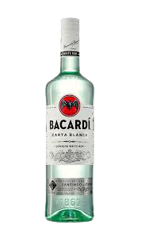

주정도(酒精度)가 40도 정도이고, 네덜란드에서는 국민적 음료로 널리 애용되며, 게네베르(genever)라 부른다.
17세기경에는 알코올 증류기술이 미숙하여 마실 수 없을 정도의 냄새가 났다.
네덜란드 레이덴대학의 실비우스 교수가 연구 끝에 냄새를 제거하여 제조한 것이 진이다.

일명 '해적의 술'이라고도 하는 럼은 서인도제도에서 사탕수수를 원료로 만든 술입니다.
주로 추운 러시아나 북유럽에서 주로 많이 사랑받는 술이랍니다. 도수가 높아 과잉 섭취하지 않도록 해야 하는 럼에 대해 알려드립니다.